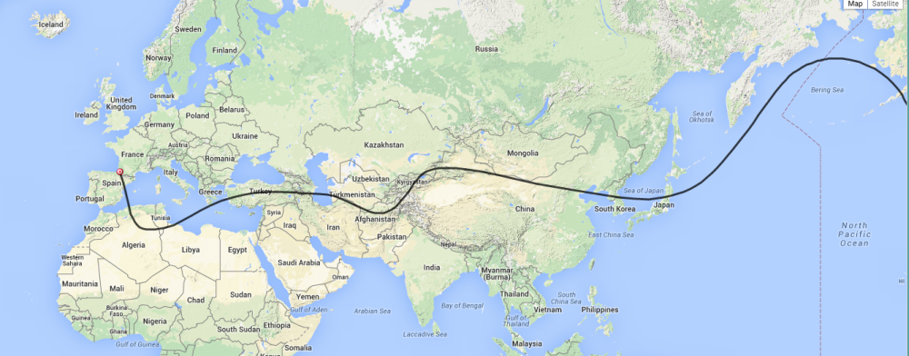

The current balloon, CNSP-22, flying at 38000’ has come back into radio range in France and is just entering Spain. It’s radio call is K6RPT-11 and it is just a little West of the predicted path on a track toward Algeria. The link below will take you to the APRS screen to check on the balloon’s progress. http://aprs.fi/#!call=a%2FK6RPT-11&timerange=604800&tail=604800 I have done an updated prediction based on its current flight information and it looks like it will turn East in Algeria and proceed back across the Med toward Turkey.  Don |